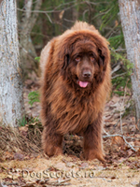

Лабрадор ретривер – это одна из самых популярных в мире пород собак, история происхождения которой, тщательно изучалась любознательными исследователями. Несмотря на пристальный интерес доподлинно выяснить основные этапы cтановления породы трудно, поэтому существуют разные версии по этому поводу.
Не вызывает сомнений лишь тот факт, что предки лабрадоров жили на острове Ньюфаундленд, хотя название породы закрепилось в честь полуострова Лабрадор. Некоторые исследователи считают, что географическое положение не повлияло на название, а приписывают главную роль цвету первых представителей породы, которые были чёрной масти, как камень лабрадорит. Ещё одна интересная версия связывает название породы с переводом слова Labrador, что означает «труженик». Учитывая повышенную работоспособность и активность этих собак, данная версия также имеет право на существование.
 Предками лабрадоров были большие собаки, от которых произошли и современные ньюфаундленды. Упоминание об этих собаках встречается в 1593 году у мореплавателей, плававших к северной окраине американского материка. Собаки произвели сильное впечатление на португальцев, которые отметили их необычный вид, не встречающийся у собак северных индейцев и в Европе. Не менее удивительны были и рабочие качества собак, которые одинаково хорошо служили человеку на суше и на море.
Первые лабрадоры попали в Англию именно с острова Ньюфаундленд, который находится недалеко от восточного побережья Канады. Эта отправная точка признана всеми исследователями, но дальше их мнения расходятся. Одни считают, что порода полностью сформировалась на территории острова, и англичане просто привезли её в Европу и занялись её популяризацией. Данная версия находит подтверждение в документальных и археологических источниках. В частности, при раскопках на острове Ньюфаундленд были найдены останки собак, захороненных около 4000 лет назад. Также описания первых увиденных европейцами собак на острове во многом совпадают с характеристикой первых лабрадоров.
Другие придерживаются мнения о том, что в Англию попали лишь предки современных лабрадоров, а порода была выведена в результате работы английских селекционеров. По этой версии, к крови ньюфаундлендских собак была добавлена кровь пойнтеров и чёрных гончих.
Канадский заводчик лабрадоров доктор Вудс, сторонник первой версии, считает, что предками лабрадоров на острове были собаки викингов и басков. На острове Ньюфаундленд развивались два породных типа: Большой и Малый Ньюфаундленды. Большие собаки отличались рыхлым телосложением, большими размерами и длинной шерстью. Именно они были предками современных ньюфаундлендов. Малый тип отличался большей лёгкостью телосложения, подвижностью, ловкостью и невероятной страстью к воде. Шерсть у них была короткая и жёсткая. Это были предки современных лабрадоров ретриверов, которых называли просто водные собаки Сент-Джонса, столицы о. Ньюфаундленд.
Уже в 1830-1840 годах интерес к лабрадорам был очень велик. Центром их распространения стал портовый город Пул, в который ввозили собак с острова. В 1870 году прошла выставка в Бирмингеме, на которой уже проводилось чёткое различие между ньюфаундлендом и чёрным лабрадором, как разными породами.
В 1916 году в Англии был создан клуб любителей лабрадоров ретриверов. Позже, в 1925 году появился клуб любителей жёлтых лабрадоров ретриверов. Несмотря на явное пристрастие многих заводчиков к жёлтому окрасу, Кеннел Клуб не стал сужать рамки стандарта породы, племенная работа велась с участием лабрадоров различных окрасов.
Масштаб распространения породы становился всё более впечатляющим: в год регистрировались уже не сотни, а тысячи новорождённых лабрадорчиков. Эти собаки стали неразлучными друзьями разных по характеру и образу жизни людей, при этом постепенно они перестали быть привилегией знати и вышли, что называется «в народ». Конечно, первооткрыватели этой породы прочили её несколько иное будущее: они желали видеть её элитной собакой для избранных. Но именно популярность во всех слоях общества привела к тому, что в 1998 году в Англии на свет появились 35 000 щенков лабрадоров.
Слава об этой замечательной собаке давно распространилась по всем цивилизованным странам с развитым собаководством. В Америке первые официально зарегистрированные щенки лабрадора появились на свет в 1917 году. В 1931 году был создан американский клуб любителей лабрадоров, а в 1991 году лабрадор возглавил рейтинг пород в США.